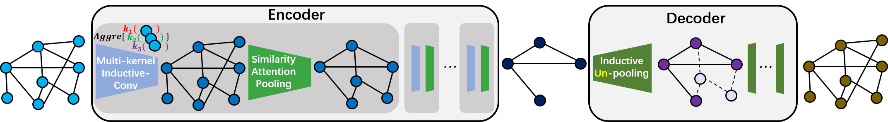

Select edges first
(a) Select the top n% rel-pairs as edges and corresponding b-boxes as nodes.
(b) Select rel-pairs with confidence score higher than k as edges and corresponding b-boxes as nodes.
(c) Select top m rel-pairs as the edges and corresponding b-boxes as nodes.
Select nodes first
(d) Select the top n% b-boxes as nodes and corresponding rel-pairs as edges.
(e) Select the b-boxes with confidence score higher than k as nodes and corresponding rel-pairs as edges.
(f) Select the top m b-boxes as nodes and corresponding rel-pairs as edges.
title={Graph Autoencoder for Graph Compression and Representation Learning},
author={Ge, Yunhao and Peng, Yunkui and Li, Linwei and Itti, Laurent},
year={2021}
}
|  | Graph Autoencoder for Graph Compression and Representation Learning Yunhao Ge*, Yunkui Peng*, Linwei Li and Laurent Itti [paper] [code] [Img2SceneGraph] |
Last update: Apr. 6, 2021